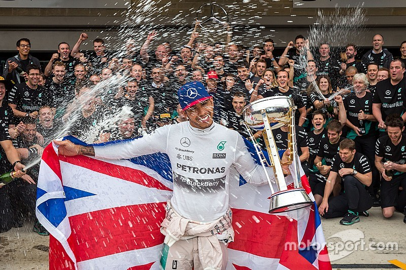

2015 Championship
The 2015 season marked the second year of Mercedes' hybrid era supremacy, with Lewis Hamilton securing his third world championship by winning 10 of 19 races and finishing 59 points ahead of teammate Nico Rosberg. Mercedes dominated with 16 race victories while Sebastian Vettel provided the main challenge, securing 3 wins for a resurgent Ferrari to finish third in the championship. The season showcased Hamilton's racecraft at its finest with several standout drives, while the intense battles between Hamilton and Rosberg set the stage for their epic 2016 showdown.